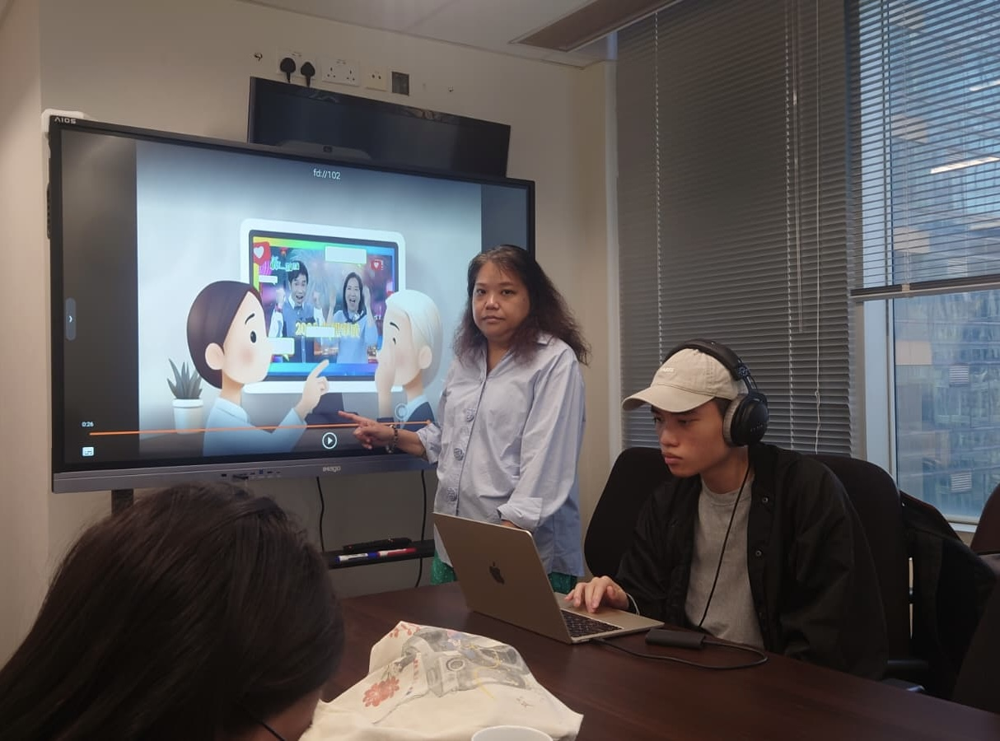
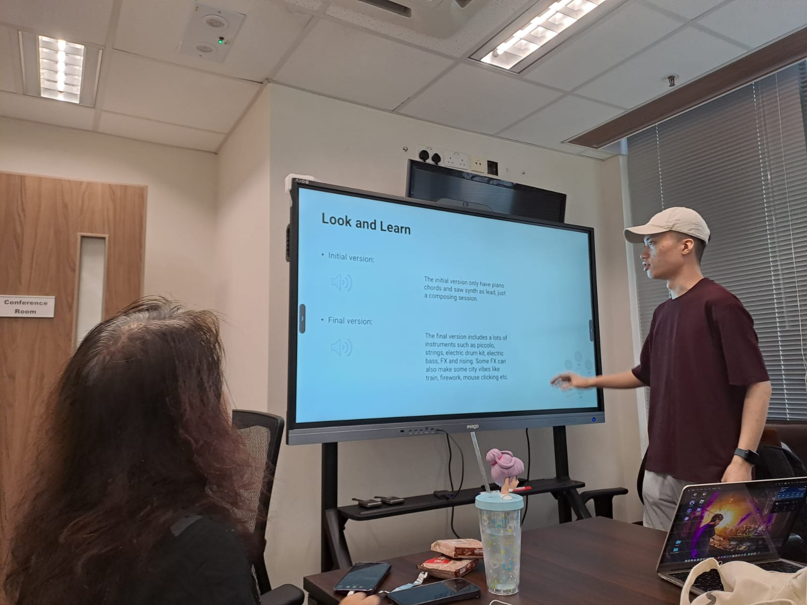
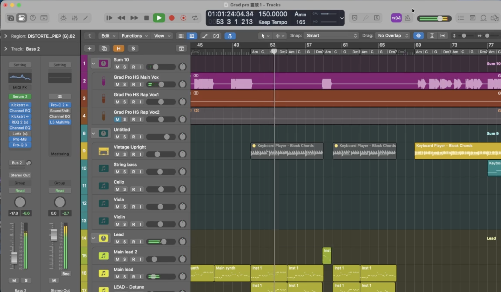
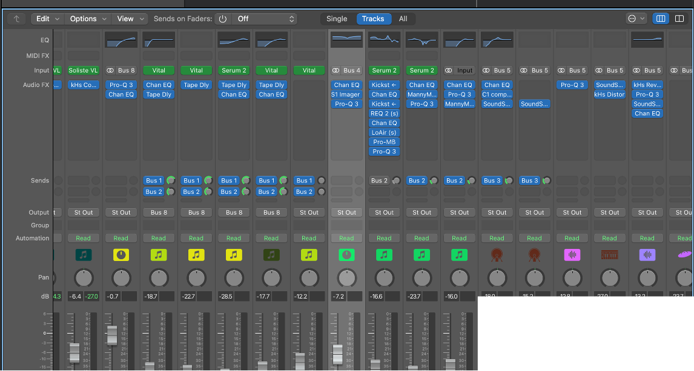
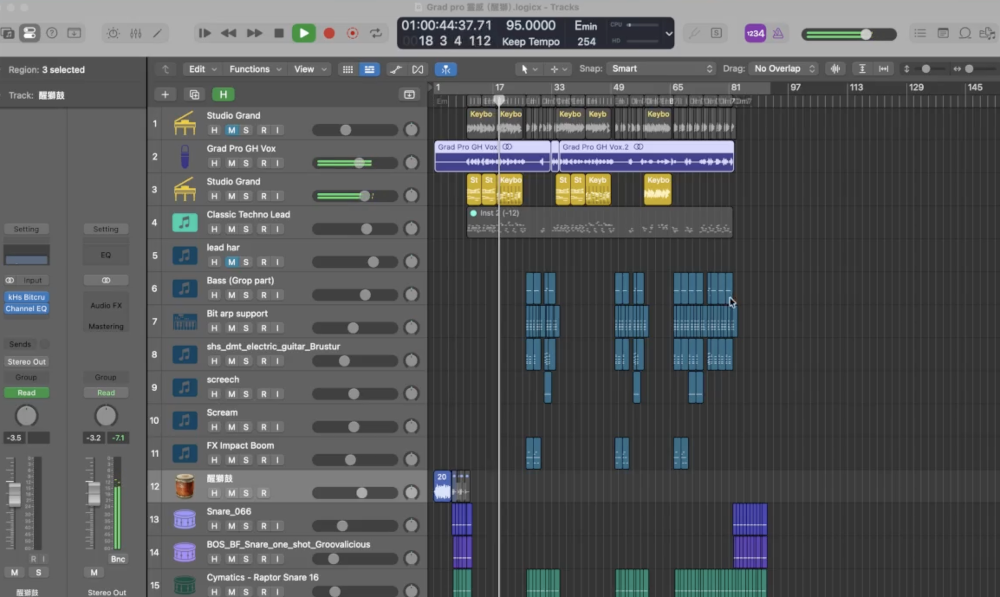
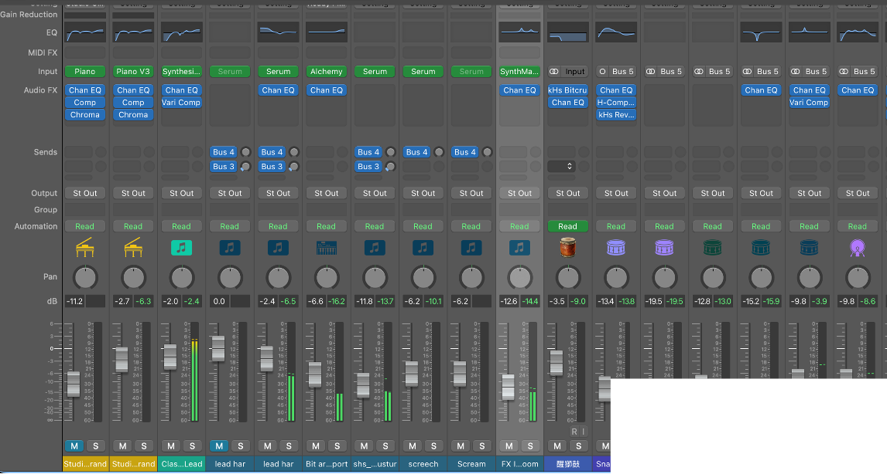

About Me
I'm Man Ho Long, a beat maker and arranger, currently studying a Higher Diploma in Music Production at HKDI. I specialize in creating electronic dance music, and work as an EDM music producer.
Recently, I have been working on my graduation project, where I compose, arrange, sing, and mix my own songs. The first song is written in the Euphoric Hardstyle genre—energetic and melodic. Through this project, I aim to bring Euphoric Hardstyle into Hong Kong’s mainstream culture, using strings and piano in the verses and powerful synths with reverse FX in the chorus. My second song is inspired by the Lion Dance drum performance, fusing electronic elements with traditional rhythms. Electric guitar drives the verses, while the melodies bring in a jazz vibe, creating a unique Electro Swing and glitch hop fusion.
In the future, I hope to share my passion for unique EDM with a wider audience and help grow the EDM scene in Hong Kong.


The Energetic East — Album

In the heart of old Hong Kong, energetic young people dance to electronic music in the middle of traditional streets. Surrounded by historic buildings and red lanterns, the fast EDM beats create an exciting contrast between old culture and modern style. Under bright neon lights, the crowd dances together, showing how perfectly tradition and modern life mix.
Songs


Lead Sheets
Experience
- RTHK Opening Music Designer
- Produced 3 opening music
- Collaborate, communicate with the animation team for opening theme
Skills
- Recording vocals and instruments
- Proficient in Logic Pro and ProTools
- Mixing tracks
- Music Arranging
- Visual effects
Inspiration
Back to Timeless Light
Trying to make Euphoric Hardstyle, the energetic and melodic album. I want to bring Euphoric Hardstyle into Hong Kong culture for mainstream. String, piano as verse part and chorus part simply use synths and some reverse FX.
光火瑞獅
Inspired in Lion Dance Drum Performance, I want to fusion the electronic elements with lion dance (醒獅鼓). The electric guitar fill up on verse. Not only glitch hop, the melodies also provide a jazz vibe to make Electro Swing type of music.
My Process
Back to Timeless Light


光火瑞獅

